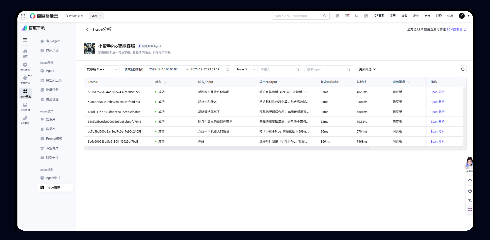
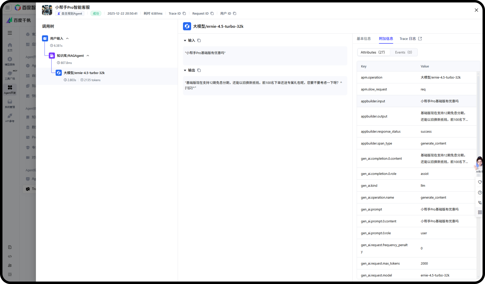

百度实习
Trace / 可观测性
2025.03 - 2025.06
千帆 AppBuilder 日志追踪
变“黑盒”为“透视”，实现“开发-调试-上线-追踪”闭环，开发者 100% 自助式故障诊断。
L1 列表页展示

现状痛点 (Before)
黑盒运行：线上应用调用链路不可见，开发者无法获取各节点的输入输出、参数及耗时。
排查困难：故障排查困难，难以针对性优化 Agent 策略。
核心工作 (Actions)
1
节点梳理
全量梳理 Agent 涉及的所有运行节点，基于内部策略安全与用户功能透明，定义外部可透出的节点范畴。
2
字段透传
从底层字段中，精选首/尾响、模型参数等高价值字段透传，同时屏蔽敏感系统提示词。
3
产品设计
设计 2 层 Agent 调用链路看板，调用树可视化呈现节点级输入输出。
- L1 列表页：展示全量对话 Trace，快速定位异常请求。
- L2 抽屉页：下钻展示节点树与键值对详情，可视化呈现 Agent 思考逻辑。
L2 抽屉页展示

目标效果 (After)
闭环与易用性提升
实现“开发-调试-上线-追踪”闭环，提升平台易用性。
自助诊断与策略调优
开发者实现 100% 自助式故障诊断。变“黑盒”为“透视”，直观支撑 Agent 策略调优。